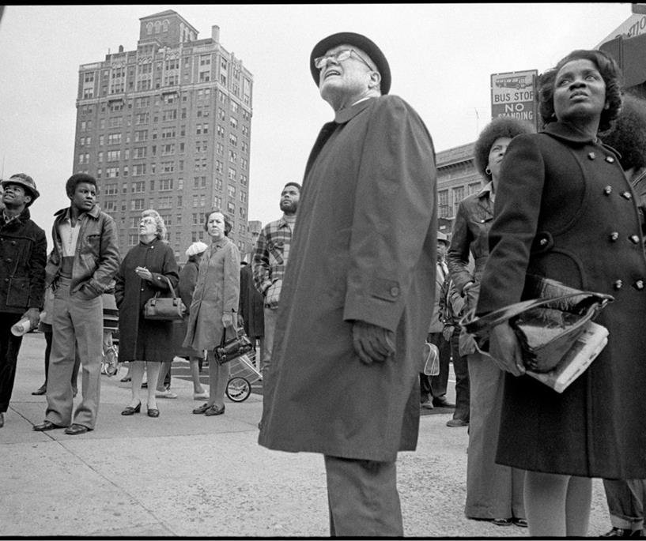

Flatbush Ave. Fire, Ed Gallucci, 1972, printed 2013, Brooklyn Museum: Photography
© Ed Gallucci
Size: image: 8 5/8 x 12 7/8 in. (21.9 x 32.7 cm) sheet: 13 x 19 in. (33 x 48.3 cm)
Medium: Inkjet printhttps://www.brooklynmuseum.org/opencollection/objects/212951